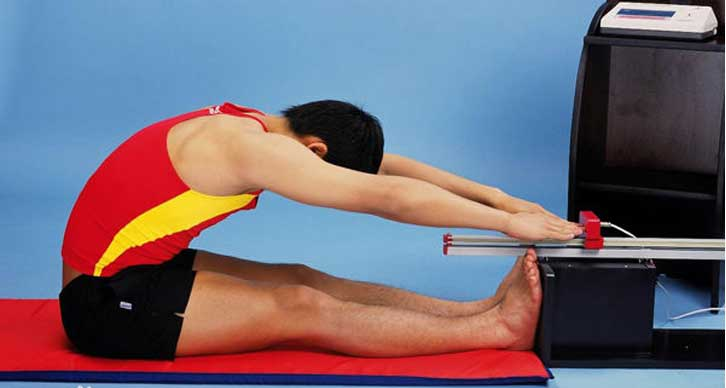

坐位体前屈标准测量方法
2016/02/02
测量帮助

坐位体前屈是测试学生在静止状态下的身干、腰、髋等关节可能达到的活动幅度，主要反映这些部位关节、韧带和肌肉的伸展性和弹性及学生身体柔韧素质的发展水平。
1、将仪器放置在平坦地面上。测试前，用尺进行校正，即将直尺放在平台上，使游标的上平面与平台呈水平，将游标的刻度调到0位。
2、测试前，受试者应在平地上做好准备活动，以防拉伤。
3、受试者坐在连接于箱体的软垫上，两腿伸直，不可弯曲，脚跟并拢，脚尖分开约10—15厘米，踩在测量计垂直平板上，两手并拢。
4、两臂和手伸直，渐渐使上体前屈，用两手中指尖轻轻推动标尺上的游标前滑（不得有突然前伸动作），直到不能继续前伸时为止。
5、测试计的脚蹬纵板内沿平面为0点，向内为负值，向前为正值。记录以厘米为单位，取小数点后一位。如为正值则在数值前加“+”符号，负值则加“－”符号。